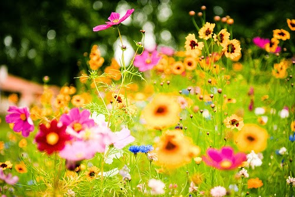
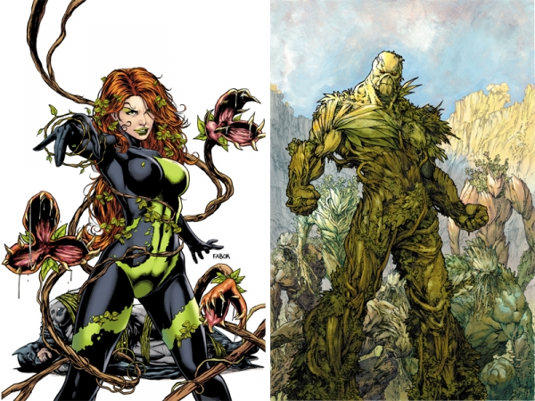

Shashwati Ghosh.That's me.
...more specifically, what if there is a proper rainy 'season'in the year instead of sporadic,scattered rain showers here and there.
Heavy,regular showers, maybe torrential downpours on some days...spanning over around a month
Lets go ahead and give it a thought, lets measure up the pros and cons a little
The pros may be:
- Thriving VEGETATION.Gardens blooming with
flowers
.Backyard veggie patches flourishing with new and multiple types of shiny green healthy vegetables
,hence more varied dinners everynight!
- Cleaner, washed driveways and garden benches(that only the birds and dust have lately decided to "sit" on). Even your car waiting outside gets a queaky clean wash at no additional cost.
- Its like Spring suddenly discovered the bottle of Steroids!

And the cons are:...drum roll please...
- Thriving GERMS! Lesser we discuss on this, the better(ahem!)
- Messier, dirtier foyers in our homes...and the resulting music from the lady of the house that could 'enliven' your rainy days even more
- Bye Bye BBQs and camping out
- Nature doesnt exacly always show up in benevolent forms. U imagine an idyllic scene...,but u end up getting strangled as the veggie patch turns into a monster,
your gardens are more like a riot of rogues.U see vines and creepers creeping up in your dreams and choking u in your nightmares.
U dream of this,
... U get this instead...
!!!